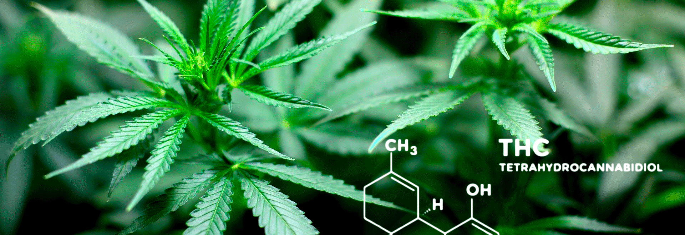

Лечение хронической боли - это популярный способ применения медицинского каннабиса среди взрослых, подростков и даже детей. Многочисленные исследования подтверждают обоснованность и целесообразность применения каннабиноидов для облегчения боли различного происхождения.
Механизмы такого облегчения:
- базовый механизм обезболивания с помощью каннабиса;
- преимущества над нестероидными противовоспалительными обезболивающими;
- усиление эффективности опиатных обезболивающих;
- облегчение боли при хронической почечной недостаточности;
- облегчение боли при онкологии;
- облегчение невропатии при ВИЧ;
- применение в палеативи по онкологии;
- острый послеоперационный боль.
Колличество каннабиса необходимого для обезболивающего эффекта
В таких странах как Канада, США, Великобритания, Нидерланды и Израиль, средним количеством медицинского каннабиса, которое использует пациент, является 0,67 - 3 грамма в день. Исследование, которое мы сегодня рассматриваем, показало возможность 20-кратного снижения количества каннабиса, необходимого для обезболивания, с помощью использования специальных технических устройств для ингаляции. Впрочем, это не первое исследование, которое подтверждает эффективность микродозинга, - подобные эксперименты проводились в 2008, 2013 и 2015 годах и показали, что дозировка в 3 и 5 мг облегчают нейропатию, устойчивую к лекарствам.
Из всех способов лечения ингаляция каннабиса является самым простым, быстрым и эффективным способом облегчения боли, однако количество каннабиноидов, которые попадают в организм, значительно отличается в зависимости от сорта каннабиса и интенсивности вдыхания. Даже при компьютерных измерений концентраций ТГК в плазме крови, которые контролировали количество затяжек, длину ингаляции, длину задержки дыхания и время между затяжками, - заметили что эти уровни существенно отличались у участников опыта. Неудивительно что на мировом рынке появляются медицинские устройства, которые должны решить проблему точной доставки каннабиноидов при их ингаляции.
Прибор для ингаляции The Syqe Inhaler
Одно из таких устройств называется The Syqe Inhaler, разработанно в Израиле, его задача - четко отмерить различные дозировки каннабиноидов из сырых растений. За 2 секунды нагрева и распыления, 90% тетрагидроканабинольнои кислоты (ТГК-а, thc-a) проходит через процесс декарбоксилирования в фармакологически активную форму ТГК. Девайс имеет автоматические термальные и поточные контроллеры, которые обеспечивают поставки каннабиноидных паров в легкие, независимо от паттерна дыхания каждого пациента. Устройство также контролирует и записывает весь процесс вдыхания, что позволяет вести журнал лечения. Прибор The Syqe Inhaler запрограммирован так, чтобы аккуратно доставлять различные дозировки (0,5 - 1,5 мг ТГК) в соответствии с потребностями пациента, что позволяет индивидуализировать режим приема ТГК.
Этот аппарат привлек наше внимание потому что его было проверено в рандомизированном двойном перекрестном контролируемом плацебо исследовании, проведенном в г.. Хайфа, Израиль между мартом 2016 и июлем 2017. Основной целью исследования стало определение терапевтического окна для облегчения хронической боли. Участниками стали 27 взрослых людей с диагнозами радикулопатии, диабетической нейропатии, комплексного регионального болевого синдрома, других фокальных нейропатии и фантомной боли в возрасте от 18 до 67 (в среднем - 48 лет).
Каждый из них трижды посетил исследовательский центр, где получил собственный ингалятор, заряженный чипами с шишками каннабиса сорта Bedrocan из Нидерландов, с содержанием 22% ТГК, 0.1% CBD, <0.2% CBN или плацебо. Для этого исследования аппарат был запрограммирован на отмеривания выборочных дозировок в 0,5 мг или 1 мг ТГК, с использованием алгоритма, который электронно контролирует такие характеристики ингаляции как температура, продолжительность и поток испарений. Ученые последовательно замеряли уровни ТГК в плазме крови пациентов в разные промежутки времени до и после ингаляций, а также уровень артериального давления и скорость сердцебиения. Испытуемые также оценивали уровни боли по визуально-аналоговой шкале (ВАШ) измерения боли.
Выяснилось, что применение такого незначительного дозирования 0,5 мг ТГК у большинства пациентов облегчает боль на 25%, что пациентами определяется как заметное облегчение. Удвоение же дозировки поднимает эффективность почти вдвое, при этом эффект обезболивания оценивается как существенно больший. Вместе с тем при первом эксперименте с дозировкой, ТГК не вызвало у пациентов ощущение психоактивности, однако уже второй эксперимент имел такой исход. Ученые отмечают, что в зависимости от дозы ТГК эффект получается крайне высоким и разнообразным, что требует надлежащей точности для правильного применения каннабиноидов в медицине.
Тот факт, что значительное количество пациентов с болью ежедневно употребляет большие количества каннабиса, показывает на пропасть между научными исследованиями и практикой лечения.